Awesome SVG
Accessibility
Animation
Basics
Books
Downloads
Experiments
Filters
Follow twitter
Fragments
Gradients
Grunt plugins
Gulp plugins
Icons
Libraries
Masks clips
Optimization
Patterns
Responsive
Sites using-svg
Slides
Snippets
Softwares
Text
Videos
groups
Slides
Working with SVG - A Primer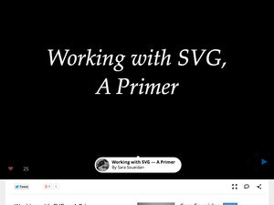
Play SVG! Utilizando vetores na web by Willian Justen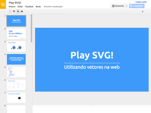
- Pt-Br
Whirlwind Tour of SVG (plus RaphaelJS) by Mark Grabanski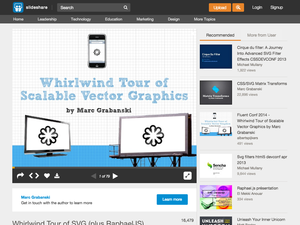
Styling & Animating Scalable Vector Graphics with CSS by Sara Soueidan
Responsive svg by lex Walker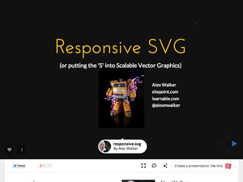
Leaving Pixels Behind by Todd Parker
SVG by James Coleman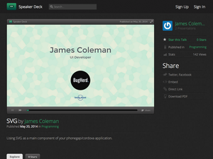
SVG for the Responsive Web by Jan van Hellemond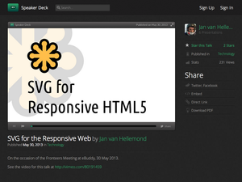
Next Level SVG by Ilya Pukhalski
D3: Data-Driven Documents by Mike Bostock
Filter Effects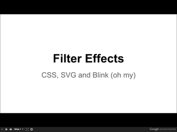
You don't know SVG by Dimitry Baranosky
The future of SVG and Web Standars by Tavmjong Bah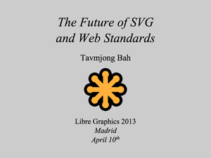
The future of gradients in SVG by Nikos Andronikos
The Power of SVG& the Open Web by Doug Schepers
SVG Sprites: Basic Usage and More by Cody J Landstrom
Animating SVG with CSS and SMIL by Sara Soueidan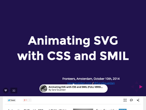
SVG - De volta e para o futuro by Maujor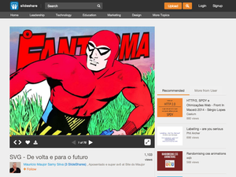
Pt-Br
SVG Strikes Back by Matt Baxter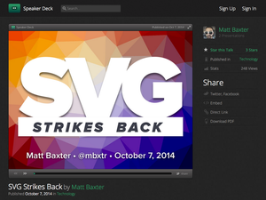